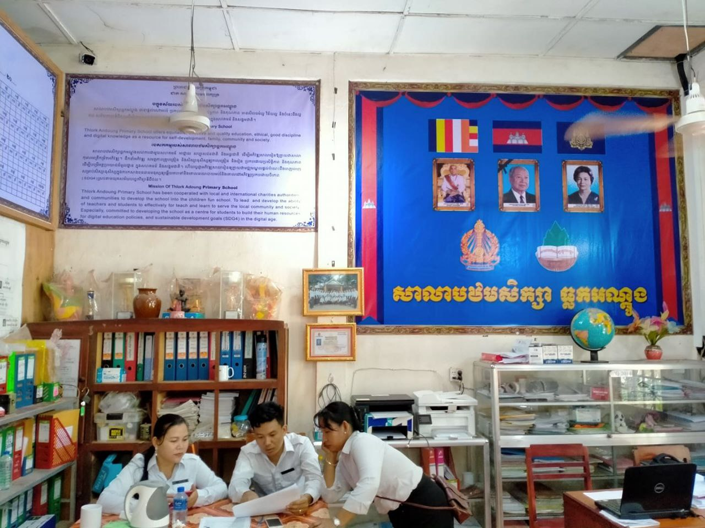

ប្រវត្តិសាលាបឋមសិក្សាធ្លកអណ្ដូង
សាលាបឋមសិក្សាធ្លកអណ្តូងចាប់ផ្តើមកសាងឡើងតាំងពីឆ្នាំ១៩៩២មកម្ល៉េះ ហើយដាក់ឲ្យប្រើប្រាស់ផ្លូវការនៅឆ្នាំ១៩៩៣ ក្រោមការជួយឧបត្ថម្ភពីសំណាក់អង្គការរ៉េដបាណា និងអង្គការUNHCR គឺត្រូវបានកសាងអគារឈើ១ខ្នងស្មើនឹង៣បន្ទប់ដែលមានសិស្សសរុបត្រឹមតែ១២៤នាក់ប៉ុណ្ណោះ។



- ពីឆ្នាំ១៩៩៣ ដល់ ២០០០ ដឹកនាំដោយលោកនាយកឈ្មោះ សេន ភីវិន នៅឆ្នាំ១៩៩៧មាន
សមាគមន៍សាមគ្គីភាពបារាំងជួយឧបត្ថម្ភអគារ១ខ្នងទៀតមាន៤បន្ទប់និងបង្គន់អនាម័យ១ខ្នងស្មើនឹង
៣បន្ទប់។
- ពីឆ្នាំ២០០០ ដល់ ២០០៥ដឹកនាំដោយលោកនាយកឈ្មោះ នួន សុខា នៅឆ្នាំ២០០៥មាន
សប្បុរសជនស្វីស គឺលោកអិនរីកូសាលា បានឧបត្ថម្ភអគារ១ខ្នងទៀតមាន៤បន្ទប់។
- ពីឆ្នាំ២០០៥ ដល់ ២០១២ ដឹកនាំដោយលោកនាយកឈ្មោះ ប៉ែន ណារ៉ា នៅឆ្នាំ២០០៩មាន
ប្រធានសមាគមន៍ទ្រទ្រង់កុមារអាស៊ីជប៉ុនបានឧបត្ថម្ភអគារ១ខ្នងទៀតមាន៤បន្ទប់ និងលោកប្រធានក្លឹប
អន្តរជាតិជប៉ុន បានឧបត្ថម្ភអគារ១ខ្នងទៀតមាន៥បន្ទប់ និងបង្គន់អនាម័យ១ខ្នងស្មើនឹង៥បន្ទប់ផងដែរ។
- ចាប់ពីចុងឆ្នាំ២០១២ដល់ បច្ចុប្បន្ន ដឹកនាំដោយលោកនាយកឈ្មោះ អ៊ុច វុឌ្ឍី។
- នៅឆ្នាំ២០១៣KT&G SOCIAL WELFARE FOUNDATION OVERSEA
VOLUNTEER របស់កូរ៉េខាងត្បូងជួយកសាងអគារ១ខ្នងទៀតមាន១បន្ទប់។
- នៅឆ្នាំ២០១៤ សប្បុរសជនកូរ៉េបានជួយបុកអណ្តូង និងដាក់សឺទែនទឹក ព្រមទាំងកសាងកន្លែងលាងដៃមួយកន្លែង។ហើយនៅចុងឆ្នាំ២០១៤នេះយើងបានធ្វើពាក្យស្នើសុំបើកអនុវិទ្យាល័យ ឲ្យដំណើរការក្នុងឆ្នាំសិក្សា២០១៤-២០១៥ ដែលមានសិស្សសរុប១៦០នាក់ ចែកចេញជា៣បន្ទប់គឺថ្នាក់ទី៧សុទ្ធ។ក្នុងឆ្នាំសិក្សា២០១៥-២០១៦-២០១៧-២០១៨ យើងព្យាយាមអំពាវនាវដល់មាតាបិតាសិស្សដើម្បីរកថវិកាធ្វើរបង និងក្រាលការ៉ូឡាក្នុងទីធ្លាសាលារៀន តម្លើងប្រព័ន្ធភ្លើង បំពាក់កង្ហាគ្រប់បន្ទប់។
- នៅចុងឆ្នាំ២០១៩យើងបានស្នើសុំឲ្យប្រធានអង្គការអនាគតកម្ពុជា គឺអ្នកគ្រូជីហ្គោហ្សាតាណាកាជនជាតិជប៉ុនជួយកសាងអគារ១ខ្នងទៀតមាន២ជាន់ស្មើនឹង១២បន្ទប់សម្រាប់អនុវិទ្យាល័យ។
- នៅក្នុងឆ្នាំ២០២០នេះយើងបានស្នើសុំឲ្យប្រធានអង្គការអនាគតកម្ពុជា គឺអ្នកគ្រូជីហ្គោហ្សាតាណាកាជនជាតិជប៉ុនជួយកសាងបង្គន់អនាម័យ១ខ្នងស្មើនឹង១៦បន្ទប់ មានកន្លែងឈរនោមកុមារា១០កន្លែង និងបំពាក់ឡាបូលាងសម្អាតដៃ៦ផងដែរ មិនតែប៉ុណ្ណោះថែមទាំងជួយដាក់លូ ចាក់ដី ក្រាលការ៉ូឡា ដាំបង្គោលទាក់ខ្សែច្រវ៉ាក់សុវត្ថិភាពនៅមុខរបងសាលារៀនទៀត និងជួយធ្វើរបងសាលារៀនបង្ហើយ។នៅក្នុងឆ្នាំ២០២០នេះយើងក៍ព្យាយាមខ្លួនឯងដើម្បីបំពាក់កាមេរ៉ា សុវត្ថិភាពចំនួន១៧គ្រាប់ផងដែរ។
- នៅឆ្នាំ២០២១ យើងបានព្យាយាមធ្វើសួនបំណិនជីវិត សួនរង្វង់មូលទង់ជាតិថ្មី ហើយប្រធាន
គណ:កម្មការទ្រង់សាលារៀនគឺអ្នកគ្រូឡោវ៉ាន់នី បានជួយកសាងសម្តេចសង្ឃរាជជួន ណាត និងព្រះបាទជ័យវរ្ម័នទី៧។
- នៅឆ្នាំ២០២២យើងបានអំពាវនាវទៅសហគមន៍មាតាបិតាសិស្សជួយជាថវិកាដើម្បីទិញទូរទស្សន៍ឆ្លាតវៃបានចំនួន១៤គ្រឿង និងធ្វើទ្វាររបងថ្មីថែមមួយទៀត ព្រមទាំងធ្វើឃ្លាំងដាក់សម្ភារ១បន្ទប់។
- នៅឆ្នាំ២០២៣យើងបានអំពាវនាវទៅសហគមន៍មាតាបិតាសិស្សជួយជាថវិកាដើម្បីទិញម៉ាសីនកុបពីខ្នាតធំតម្លៃ៣៥០០$។យើងបានព្យាយាមធ្វើបន្ទប់ចម្រោះទឹកស្អាត១បន្ទប់ ធ្វើកន្លែងលាងសម្អាតដៃ២កន្លែង បុកអណ្តូងដាក់សឺទែនទឹកថ្មី២០០០លីត និងជួសជួលក្រាលការ៉ូឡាអស់១៩០ម៉ែត្រការ៉េ។ហើយតំណាងមាតាបិតាសិស្សជួយបំពាក់សូឡាឲ្យបាន១៥ផ្ទាំង។
- នៅឆ្នាំ២០២៤យើងបានអំពាវនាវទៅសហគមន៍មាតាបិតាសិស្សជួយជាថវិកាដើម្បីជួសជុលប្រឡាយទឹកប្រវែង១៦៥ម៉ែត្រអស់ថវិកា៥ ០០០ ០០០រៀល(១២៥០$)។ក្រាលការ៉ូក្នុងទីចាត់ការ១បន្ទប់អស់ថវិកា៥០០ដុល្លាសង់បន្ទប់ថ្មី១បន្ទប់អស់២៤លានរៀល ទទួលបានតុសិស្ស៥០ពីមន្ទីរអប់រំខេត្តសៀមរាប។ ធ្វើពិដានថ្នាក់រៀន៣បន្ទប់អស់១២០០$។ លាបថ្នាំជញ្ជាំង៦បន្ទប់ និងលាបថ្នាំជញ្ជាំងតាមមុខអគារសិក្សា៤ខ្នង។ បំពាក់ក្តារខៀនកញ្ចក់១២បន្ទប់។ធ្វើតារាងកីឡាបាល់បោះឬបាល់ទះ។នៅចុងឆ្នាំ២០២៤ធ្វើសួនកុមារទំហំ២០មX២៤ម ក្រោមជំនួយឧបត្ថម្ភពីPlayground For Children Oganization និង The Rotary Club of Korea International Rotary Distrct 3630,7ADG(2024-25) Yong-Tae Kwon ហើយសាលាក៍បានចូលរួមបដិភាគអស់១០ ០០០ ០០០រៀល(២៥០០$)ដែរ។
- នៅឆ្នាំ២០២៥យើងបានធ្វើប្រឡាយទឹក១ខ្សែបំបែកចូលលូផ្លូវបេតុងខាងជើងអស់ថវិកា៣០០$។ បន្ទាប់មកបានជួសជុលដំបូលអគារB១ខ្នង៥បន្ទប់ប្រក់ក្បឿង។ហើយនៅចុងឆ្នាំយើងបានធ្វើតូបថ្មីឡើងវិញចំនួន៨តូប អស់ថវិកា១២ ០០០ ០០០រៀល(៣០០០$)។ បន្ទាប់មកធ្វើបន្ទប់សុខភាពសិក្សា១បន្ទប់អស់ថវិកា២ ៨០០ ០០០រៀល(៦៥០$)។